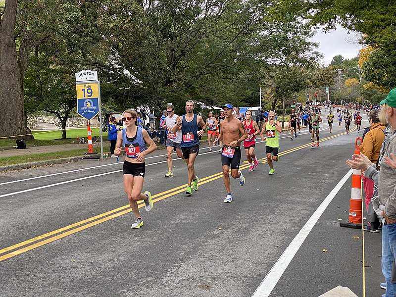

La actividad física fortalece los huesos. Se recomienda dedicar media hora tres veces por semana a actividades como correr para experimentar un aumento en la densidad mineral ósea. La práctica deportiva especialmente durante la adolescencia contribuye a alcanzar mayor densidad ósea siendo una estrategia eficaz para prevenir fracturas en etapas posteriores de la vida. Incluso en edades más avanzadas ejercicios específicos con pesas demuestran ser eficaces para prevenir la fragilidad osea.
Al igual que los músculos, los huesos requieren estímulo y movimiento para mantenerse saludables. La fuerza muscular es fundamental en la calcificación y fortalecimiento óseo. Así como el tejido muscular se desarrolla con ejercicios de resistencia, los huesos también se reconstruyen y regeneran para soportar mayor masa muscular. Los ejercicios con pesas u otros que opongan resistencia al músculo son especialmente ventajosos para prevenir la descalcificación ósea.
Recomendaciones prácticas para mantener huesos fuertes: 
Cargas breves y frecuentes
Los huesos necesitan trabajo constante para mantener su fortaleza. Aumentar la carga de manera progresiva resulta clave para obtener beneficios.
Deportes aconsejables
Correr, deportes colectivos, natación (para mantener la elasticidad muscular), y caminar son actividades beneficiosas para la salud ósea.
{kind=link}